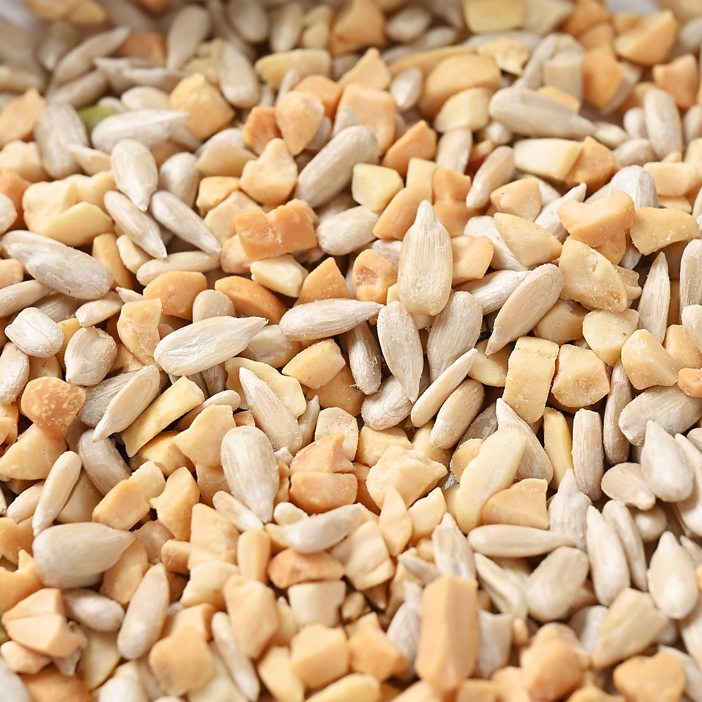

쓰임새


이바지 · 명절 · 예단 · 회사 선물
보자기에 싸는
선물세트
절굿대떡을 이바지에 쓴 것은 맛도 맛이지만 건강을 생각한 떡이라는 믿음 때문이었습니다. 명절과 예단, 회사 접대에 두루 나갑니다.
선물세트를 고르는 이유
받는 분이
기억하는 선물
01
맛의방주 등재 떡
50년 만에 돌아온 나주의 절굿대떡을 담습니다.
02
나주배 촉촉오란다
여섯 가지 견과, 나주배청으로 만든 수제 오란다.
03
한 개씩 포장
여럿이 나누기 쉽고, 남으면 하나씩 냉동.
04
상자 · 보자기 · 가방
달토끼 상자에 담고, 보자기로 한 번 더, 종이 가방까지.

달토끼가 그려진 선물 상자
절굿대떡과 나주배 촉촉오란다를 한 개씩 싸서 담습니다.
구성
떡과 오란다를
한 개씩 싸서 담습니다
받는 분이 여럿이어도 나누기 쉽고, 남으면 하나씩 냉동해 두었다가 꺼냅니다.

절굿대떡
콩고물 인절미 · 낱개 포장

나주배 촉촉오란다
여섯 가지 견과 · 낱개 포장
수량과 구성은 받는 분에 맞춰 전화로 상의해 정합니다.
포장
달토끼 상자,
보자기로 한 번 더
상자에 담고, 원하시면 보자기로 쌉니다. 들고 가시기 좋게 종이 가방을 함께 드립니다.

보자기 · 예단·이바지에

종이 가방 · 들고 가시기 좋게
재료
선물이라
더 넣지 않았습니다
떡은 유화제·인공감미료를, 오란다는 인공첨가물·방부제를 넣지 않습니다. 단맛은 나주배, 고소함은 여섯 가지 견과.
절굿대떡
찹쌀 · 절굿대 · 나주배즙 · 콩고물
넣지 않음 — 유화제 · 인공감미료
오란다
나주배청 · 참깨 · 땅콩 · 해바라기씨 · 호박씨 · 건조베리 · 건포도
넣지 않음 — 인공첨가물 · 방부제





이런 날에
이바지
양가에 건네는 첫 인사
목사골 양반들이 이바지로 쓰던 떡입니다.
명절
부모님 댁에
나눠 드시기 좋게 한 개씩 쌌습니다.
예단
보자기로 격식을
달토끼 상자를 보자기로 한 번 더 쌉니다.
회사
거래처·직원 답례
수량은 전화로 상의해 정합니다.
배송과 보관
낱개로 싸서,
보냉 상자에 담아
배송
보냉 상자 택배
낱개 포장 그대로 담아 보냅니다.
받으신 날
그대로 드세요
받으신 날 드시는 것이 가장 좋습니다.
남으면
냉동
떡은 냉동, 오란다는 냉장·냉동.

제품정보
제품명
절굿대달토끼 선물세트
구성
절굿대떡 · 나주배 촉촉오란다 (수량은 주문 시 상의)
원산지
국내산 (절굿대: 나주 자체 재배)
포장
낱개 포장 · 달토끼 상자 · 보자기(선택) · 종이 가방
보관방법
떡은 냉동, 오란다는 냉장·냉동 권장
배송 방법
보냉 상자에 담아 택배
인증
맛의방주 등재(2022) · 사회적기업 제2023-247호 · 고향사랑 답례품(2024) · 상표등록 제40-2515456호(2026)
제조원
농업회사법인 주식회사 절굿대
소재지
전라남도 나주시 징고샅길 7-1
주문·문의
전화
061-336-6969 · 매일 09:00 – 18:00
매장
절굿대달토끼 떡카페 · 나주시 징고샅길 7-1
단체·이바지
수량과 구성은 전화로 상의해 정합니다